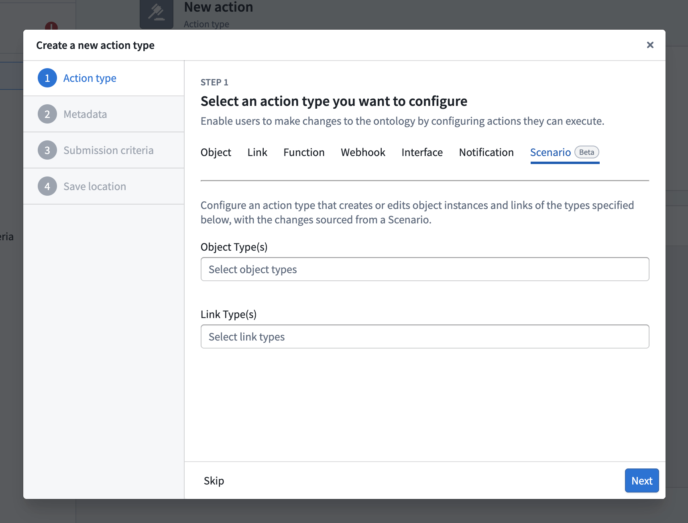
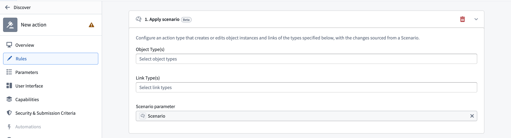

Scenarios are merged through action types that provide granular control over the scenario edits and enforce fine-grained execution permissions. At minimum, the merge action requires the single Scenario parameter, which is the RID of the scenario and includes all actions executed on the scenario. The parameter value can be passed from a Workshop variable or OSDK application.
When working within a scenario, all edits (creating objects, modifying properties, deleting objects, and adding or removing links) exist only within that scenario's isolated sandbox. These edits do not affect the main Ontology. Applying the scenario commits all those staged edits to the Ontology as a single transaction via the merge action.

:::callout{theme="neutral"} If you have an existing action that you want to use as a merge action, you can add an Apply Scenario rule to it from the Rules tab in the action configuration in Ontology Manager, rather than creating a new action type. :::
